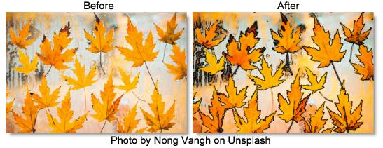

S_Cartoon
Description
Generates a cartoon look. Finds the edges in the image and draws new outlines for those edges. Smooths the colors of the areas between the edges, and optionally posterizes the colors into fewer color values.
The S_Cartoon filter comes from the Emmy award winning Boris FX Sapphire filter set.
Category
Stylize.
Controls
Presets
To select a preset, pick one from the Presets window.
Edge Width
The width of the outlined edges. Increase for thicker outlines.
Edge Strength
Scales the strength of the outlined edges by this amount. Increase for heavier edges.
Edge Threshold
Subtracts this value from outline image. Increase to remove unwanted noise and minor edges.
Edge Color
Outline the edges of the clip in this color.
Suppress Small Edges
Increase this value to remove smaller edges while keeping the larger edges.
Edge Sharpen
Amount to sharpen the outlines. Increase this value for sharper sides to the edges.
Smooth
The amount to blur the colors in the non−edge regions.
Posterize
Posterize Amount
If positive, generates a posterized look by limiting the number of colors in the result. Increase this for fewer and larger regions of solid colors. Decrease for more colors and more steps between colors.
Posterize Smooth
Amount to smooth the edges between color regions when posterizing. Increase this value to reduce aliasing between the colored areas. If set to 1, the areas will be completely smoothed together and no posterize effect will occur.
Posterize Phase
Amount to shift color boundaries when posterizing. Adjust this to fine−tune the location of the edges between the color regions. A phase of 1 is equivalent to 0.
Color Correct
Saturation.
Scales the color saturation. Increase for more intense colors. Set to 0 for monochrome.
Scale Lights
Scales the result by this value. Increase for a brighter result.
Tint Lights
Scales the result by this color, thus tinting the lighter regions.
Tint Darks
Adds this color to the darker regions of the source.
Offset Darks
Adds this gray value to the darker regions of the source. This can be negative to increase contrast.
Mix With Source
Interpolates between the result (0) and the original source (1).